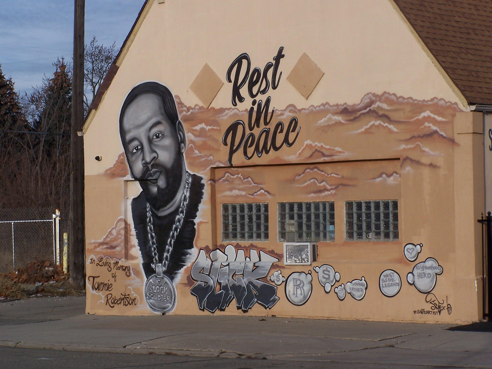

<!DOCTYPE html>
<html lang="en">
  <head>
    <meta charset="UTF-8" />
    <meta http-equiv="X-UA-Compatible" content="IE=edge" />
    <meta name="viewport" content="width=device-width, initial-scale=1.0" />
    <title>Document</title>
    <link rel="preconnect" href="https://fonts.googleapis.com" />
    <link rel="preconnect" href="https://fonts.gstatic.com" crossorigin />
    <link
      href="https://fonts.googleapis.com/css2?family=Roboto+Condensed:wght@300;400;700&display=swap"
      rel="stylesheet"
    />
  </head>
  <body>
    <!-- <nav class="nav--page--links">
      <ul>
        <li><a href="index.html">HOME</a></li>
        <li><a href="websites.html">My Website Creations</a></li>
        <li><a href="gaming.html">Content</a></li>
      </ul>
    </nav> -->
    <!-- <h1>CAT Photography</h1>

    <p>
      Photography isn't something I ever thought I would try out. In fact, I
      dont even like taking pictures of myself (or having others take them of
      me). Im learning how to <strong>PROPERLY</strong> use a camera, how to
      optimize images for use in coding, and how to take good quality shots of
      my target. It's something that will likely be easier during the warmer
      months, but it would be a lie if I said that wintertime photography doesnt
      hold its own special appeal as well. Here are a few of my first attempts
      at photography. no edits, only compression. All the following images are
      sill fairly raw.
    </p> -->
    <section id="image-carousel" class="splide" aria-label="Beautiful Images">
      <div class="splide__track">
        <ul class="splide__list">
          <li class="splide__slide">
            
          </li>
          <li class="splide__slide">
            
          </li>
          <li class="splide__slide">
            
          </li>
        </ul>
      </div>
    </section>

    <!-- <section class="photo blog">
      <div class="pic--carousel">
        <button class="carousel-btn previous">
          <svg
            xmlns="http://www.w3.org/2000/svg"
            width="24"
            height="24"
            viewBox="0 0 24 24"
          >
            <path
              d="M0 12c0 6.627 5.373 12 12 12s12-5.373 12-12-5.373-12-12-12-12 5.373-12 12zm7.58 0l5.988-5.995 1.414 1.416-4.574 4.579 4.574 4.59-1.414 1.416-5.988-6.006z"
            />
          </svg>
        </button>
        <button class="carousel-btn next">
          <svg
            xmlns="http://www.w3.org/2000/svg"
            width="24"
            height="24"
            viewBox="0 0 24 24"
          >
            <path
              d="M12 0c-6.627 0-12 5.373-12 12s5.373 12 12 12 12-5.373 12-12-5.373-12-12-12zm-1.568 18.005l-1.414-1.415 4.574-4.59-4.574-4.579 1.414-1.416 5.988 5.995-5.988 6.005z"
            />
          </svg>
        </button>
        <ul class="new-photos">
          <li class="slide initial hidden">
            
          </li>
          <li class="slide hidden">
            
          </li>
          <li class="slide hidden">
            
          </li>
        </ul>
      </div>
    </section> -->
    <!-- 
    <h2>Photography with CAT</h2>
    <h3>Winter in Detroit</h3>
    <div class="pic--grid">
      
      
      
      
      
      
      
    </div> -->
  </body>
</html>
